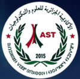

الجمهورية الجزائرية الديمقراطية الشعبية
PRÉSIDENCE DE LA RÉPUBLIQUE
PRÉSIDENCE DE LA RÉPUBLIQUE

IAPSONATRACH
Journée d'étude · AAST – IAP / Sonatrach
Questions sur
l’innovation
Axes de collaboration entre l’Académie algérienne des sciences et technologies, l’IAP et Sonatrach
📅 Mercredi 18 novembre 2026
📍 IAP Boumerdès
Document PDF de la journée d’étude · Accès libre